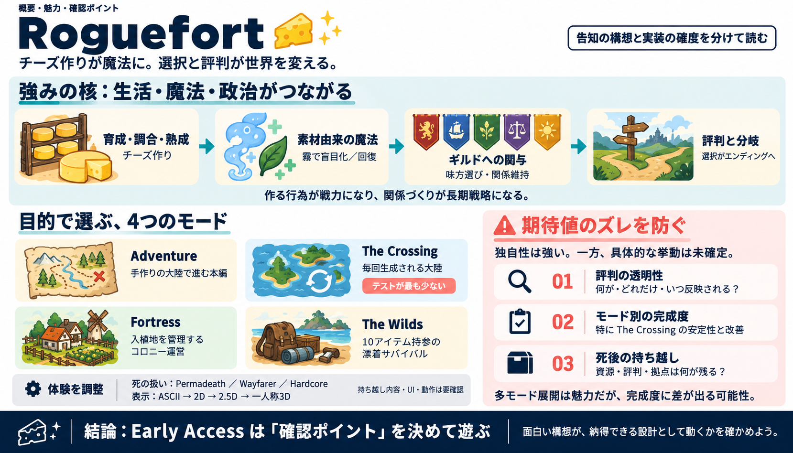

Steam Community :: Roguefort
10/10! Highly recommend! Roguefort is the best game I’ve played in a long time! I love that it’s a mixture of Star…

チーズ作りが魔法になり、ギルド戦争と評判がエンディングへ波及する、複数モード型ローグライクRPG。
告知文は「独自性」と「仕組みの方向性」を示す一方、プレイ体験の確度を左右する“実装度”や“挙動の具体”は薄い。
評判（reputation）が何をどれだけ変えるか／分岐の条件の粒度。
モードが多く、完成度に差が出る可能性。特にThe Crossingは「検証が少ない」と明言。
“チーズ作り＝魔法生成”を中核に、生活（生産）・戦争（政治）・記憶（評判）を同じ設計思想へ接続している。
育成・調合・熟成／選択（ギルドへの関与）
魔法（素材由来）と生活基盤（ホームステッド等）
評判が波及し、選択が異なるエンディングへ
チーズの育成・熟成・調理が、スモークド・ゴーダーの霧（盲目化）やサンベリー・トメ（回復）などの魔法に結びつく。
学習の楽しさと没入感：作る行為が“武器”になる。
料理・クラフトへの抵抗がある場合、主導体験になりにくい。
カンタル（Cantal）には5つのギルドと緊張関係があり、2つの同盟と1つの中立が絡むとされる。
探索だけでなく、味方選び・関係維持が戦略になる。
「どの行動が評判にどれほど影響するか」が文面だけでは読めない。
同じIPでも目的と介入の仕方が変わる。多様性は強みだが、開発分散が完成度差の原因にもなる。
手作りの大陸で進行する本編（1人中心）。
毎回生成される大陸でローグ体験。「最もテストが少ない」。
RimWorld風のコロニー運営：入植地を管理するコロニーシム。
漂着サバイバル：最初から“持ち込み10アイテム”で開始。
Permadeath、Wayfarer、Hardcoreのように死の扱いを分岐させ、ローグライクの“緊張感”を調整できる。
クラシックローグライクの選択肢。
死んでも結果を抱えて継続（結果持ち越し）。
新しい死のバリエーションとして提示。
心理負荷と育成感覚が変わり、コミュニティの定着にも波及。
“結果持ち越し”が何を残すか（資源・評判・拠点など）は要検証。
ASCII、2Dピクセル、2.5Dアイソメ、ファーストパーソン3Dの切替が可能とされ、好みへの適合を狙っている。
UI体験と没入感が変わり、学習負荷の好みが分岐する。
切替に伴うパフォーマンスやUI整備の最適化度は文面だけでは不明。
Discordでの報告・提案が方向性へ反映され、パッチノートで貢献者がクレジットされる運用方針。
透明性と当事者意識が高まりやすい。
声が大きい要望が優先される危険／長期ビジョン整合は外部から判断しにくい。
Web情報では、Roguefortは2026年10月13日にSteamでEarly Access開始とされ、開発元はTimothy Graham。
Steamのオンライン協力：最大4人。
ASCII〜3D切替、カスタムエンジン（Opthalis Engine）などが紹介の中心。
チーズ（文化・経済・クラフト）を軸に、魔法と政治（ギルド戦争）と記憶（評判）を一本につないでいる。
同盟・関係維持が長期戦略になる。
The Crossingの検証不足が“体験のばらつき”に直結。
Discord運用が開発者との距離を縮める。
視点切替（ASCII〜3D）で好み適合を広げる。
評判と分岐の透明性がどこまで提供されるか。
Roguefortは独自性と多様性が強い分、モード別完成度と評判の挙動が評価を左右する。Early Accessでの“確認ポイント”を決めて遊ぶのが得。
評判が：何を／どれだけ／いつ反映するか。
The Crossingの挙動差と更新での改善度（検証不足の影響）。
料理・クラフトを主軸にしたい人はAdventure/Fortress寄り。
死の扱い（Permadeath/Waferfarer/Hardcore）で心理負荷が変わる。
10/10! Highly recommend! Roguefort is the best game I’ve played in a long time! I love that it’s a mixture of Star…
タイトル: Roguefort ジャンル: RPG, 早期アクセス. 開発元: Timothy Graham. パブリッシャー: Timothy Graham. リリース日: 2026年10月13日. 続きを読む. 最近のイベント
Roguefort is officially out in Early Access on Steam! (Roguelike Celebration 2026) ... An open-world roguelike RPG where…
# Retro-Styled Open-World RPG Roguefort Is Out in Early Access! Timothy Graham is the developer and publisher of the fr…
View all by Tim GrahamTim Graham Follow Tim GrahamFollowFollowing Tim GrahamFollowing Add To CollectionCollection Com…